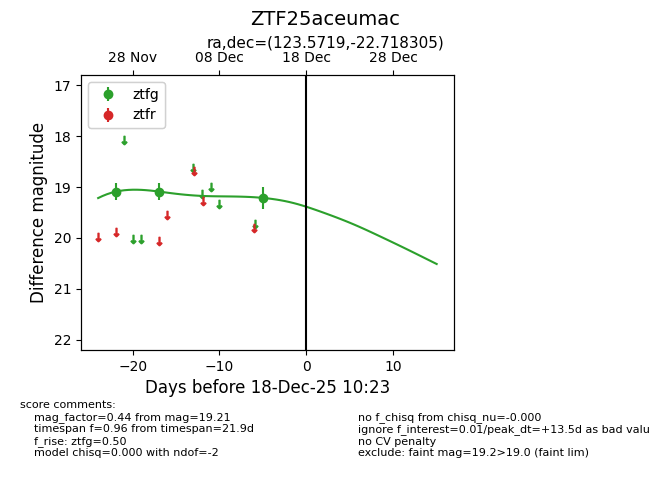
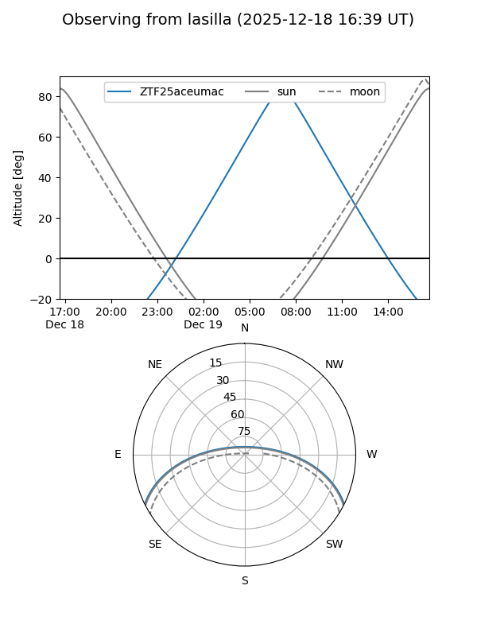
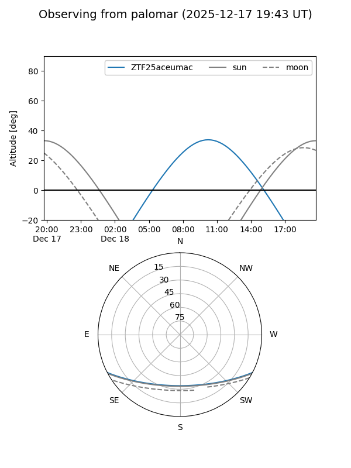

ZTF25aceumac
Target ZTF25aceumac at 2025-12-18 11:17
Aliases and brokers:
FINK: fink-portal.org/ZTF25aceumac
Lasair: lasair-ztf.lsst.ac.uk/objects/ZTF25aceumac
ALeRCE: alerce.online/object/ZTF25aceumac
alt names
ZTF25aceumac (ztf,fink_ztf)
Coordinates:
equatorial (ra, dec) = 123.5719,-22.71831
equatorial (HMS+DMS) = 08:14:17.27,-22:43:05.90
galactic (l, b) = (242.6491,+6.56018)
Photometry
last ztfg=19.21
3 ztfg detections
Lightcurve

Visibility


Additional plots